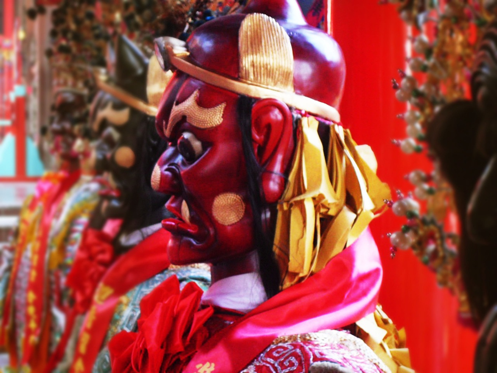

因果定律
淨空法師
世出世間任何一法，都不能違背因果定律，十方三世諸佛如來也都無法違背。當然橫死的人也不能違背，所以橫死也有橫死的因果。
過去朱鏡宙老居士講自己親身的經歷，他有一位朋友是走陰差的，在蘇州城隍廟裡面管公文。他說昨晚上海城隍廟城隍送來一批生死簿，名字都是四個字、五個字，他很疑惑，想不透，中國人名字複姓最多的是四個字，但是不可能這麼多人全是複姓。三個月之後，也就是民國二十一年，日本人侵略中國，在上海爆發一二八事變。
他們才恍然大悟，這是日本人在這個戰役中死亡的名單。在三個月之前，名單已經送到蘇州都城隍，所以沒有一個冤枉死的。為什麼會遭橫死？造作不善的業因。什麼樣的業因感什麼樣的果報，絲毫不爽。